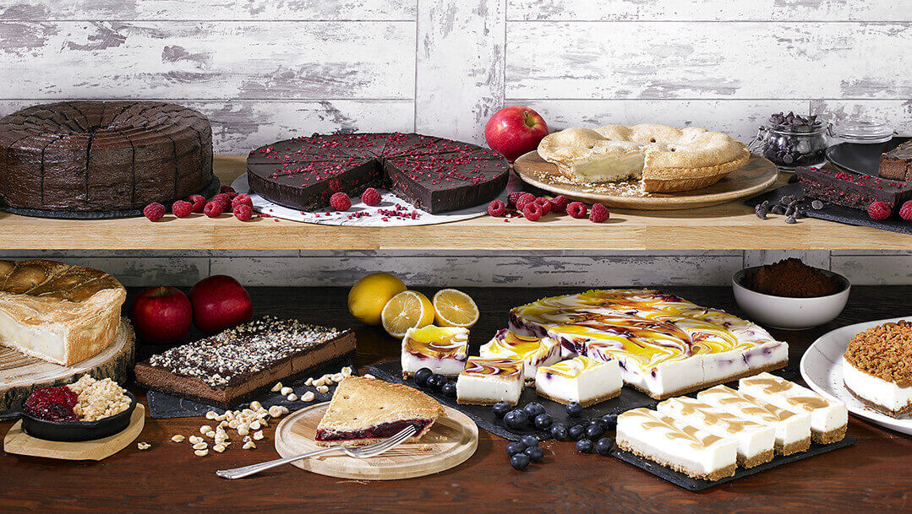

In this website you will find a whole variety of desserts with their recipes and cooking instructions, the desserts here presented have passed through an exhaustive selection from different Maracaibo's chefs . We hope you like them and maybe someday you could cook one too!\n

Here you have the list of the recipes that you can find in our website, if you want to know more about one of them just try to click it!